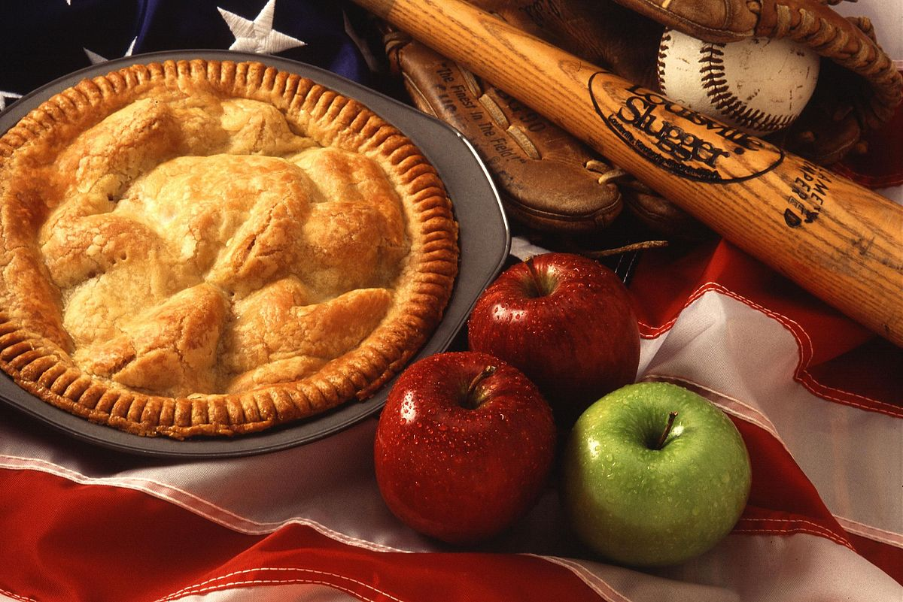
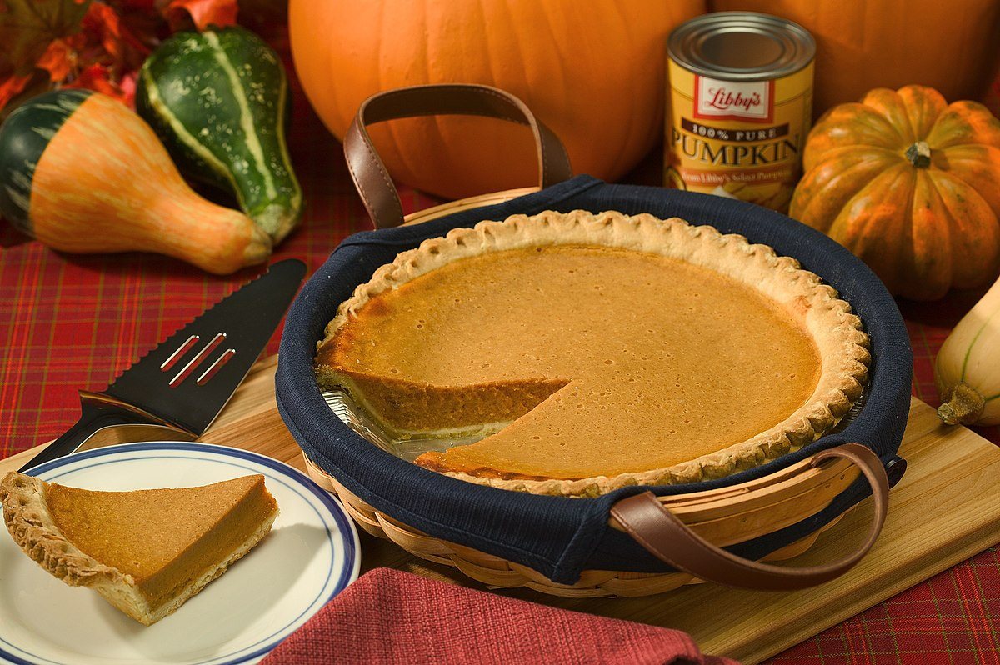

Seasonal Pies:
Seasonal pies are a delightful way to celebrate the flavors of each season. Here are some popular seasonal pies along with a brief description of each:
1. Apple Pie (Fall): Apple pie is a classic fall dessert, often made with a flaky pastry crust and spiced apple filling. It's perfect for enjoying during the crisp autumn months.

2. Pumpkin Pie (Fall): Pumpkin pie is a staple dessert for Thanksgiving and other fall festivities. It features a creamy pumpkin filling flavored with cinnamon, nutmeg, and cloves, all nestled in a buttery crust.

3. Pecan Pie (Fall/Winter): Pecan pie is a rich and decadent dessert made with a filling of pecans, sugar, butter, and eggs, all baked in a flaky crust. It's a popular choice for holiday gatherings.
 4. Strawberry Rhubarb Pie (Spring): Strawberry rhubarb pie is a delightful springtime dessert that combines the sweetness of ripe strawberries with the tartness of fresh rhubarb. It's often enjoyed with a lattice crust.

4. Strawberry Rhubarb Pie (Spring): Strawberry rhubarb pie is a delightful springtime dessert that combines the sweetness of ripe strawberries with the tartness of fresh rhubarb. It's often enjoyed with a lattice crust.

 5. Blueberry Pie (Summer): Blueberry pie is a refreshing summer treat, bursting with juicy blueberries and encased in a golden pastry crust. It's best enjoyed with a scoop of vanilla ice cream.
5. Blueberry Pie (Summer): Blueberry pie is a refreshing summer treat, bursting with juicy blueberries and encased in a golden pastry crust. It's best enjoyed with a scoop of vanilla ice cream.